臨界耦合常數理論
前言
DOI:10.1038/s41598-023-33809-5
我的博士研究聚焦於如何透過材料設計，在常壓下提升超導臨界溫度。觀察不同超導體的臨界溫度，可以發現其會隨著化合物元素的多樣性而提高。從這個趨勢外推，我們預期若氧化物含有超過 12 種元素，有機會實現室溫超導。 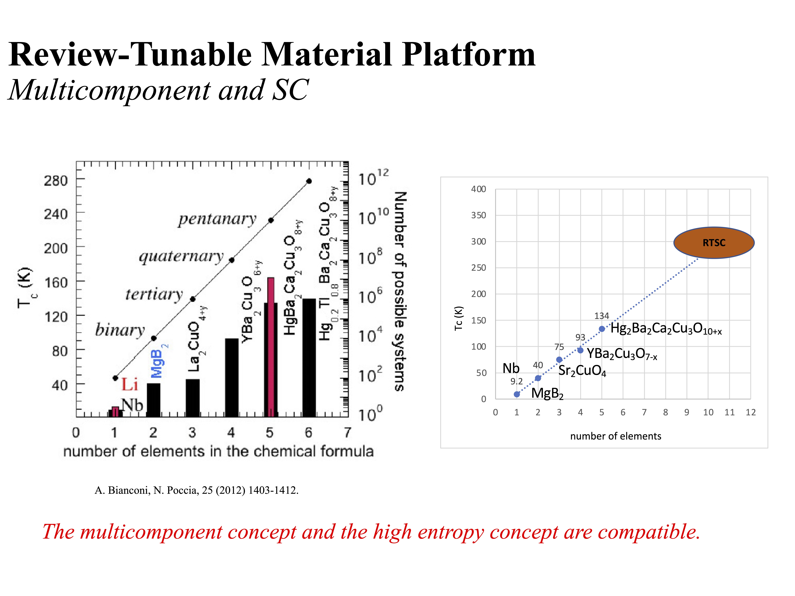 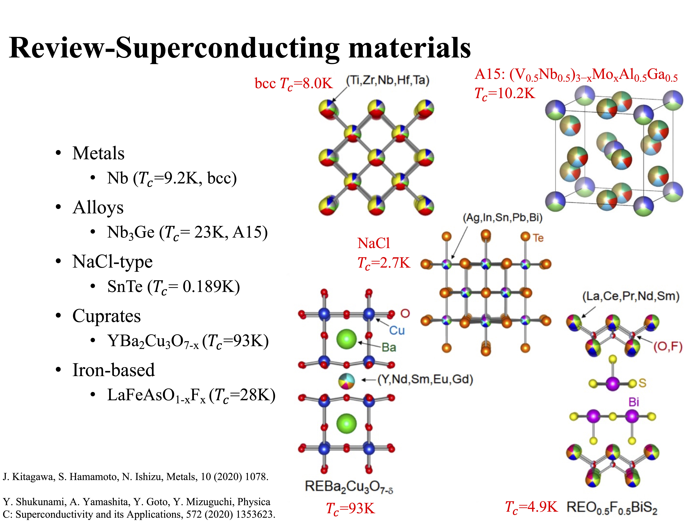
▲從趨勢外推，我們預期若氧化物含有超過 12 種元素，有機會實現室溫超導。(點圖放大)
這種多元素的概念與高熵材料的概念相近。下圖展示傳統超導材料與其高熵版本的對照。若從常見的 80 種元素中選取 12 種，其可能組合至少有 \(C_{12}^{80} ≅ 10^{14}\) 種！因此有必要建立化合物與超導理論之間的關聯，以縮小設計空間。
▲圖示傳統超導材料與高熵超導對應版本。(點圖放大)
聲子、壓力與載子數對 \(T_c\) 的影響
自超導現象被發現以來，提升其臨界溫度 \(T_c\) 一直是凝態物理的核心議題。具體而言，改變聲子頻率、調控載子數量、以及施加壓力，是三種提升 \(T_c\) 並進一步推導理論的重要實驗途徑。然而，這些方法在弱耦合（低 \(T_c\)）與強耦合（高 \(T_c\)）系統中，效應可能大相逕庭。
聲子效應 \( \Omega \)
對於金屬超導體與\(MgB_2\)超導體（屬於弱耦合系統），\(T_c\) 可藉由聲子軟化（softening）提升；而在銅氧系超導體（屬於強耦合系統）中，則可藉由聲子硬化（stiffening）提升。 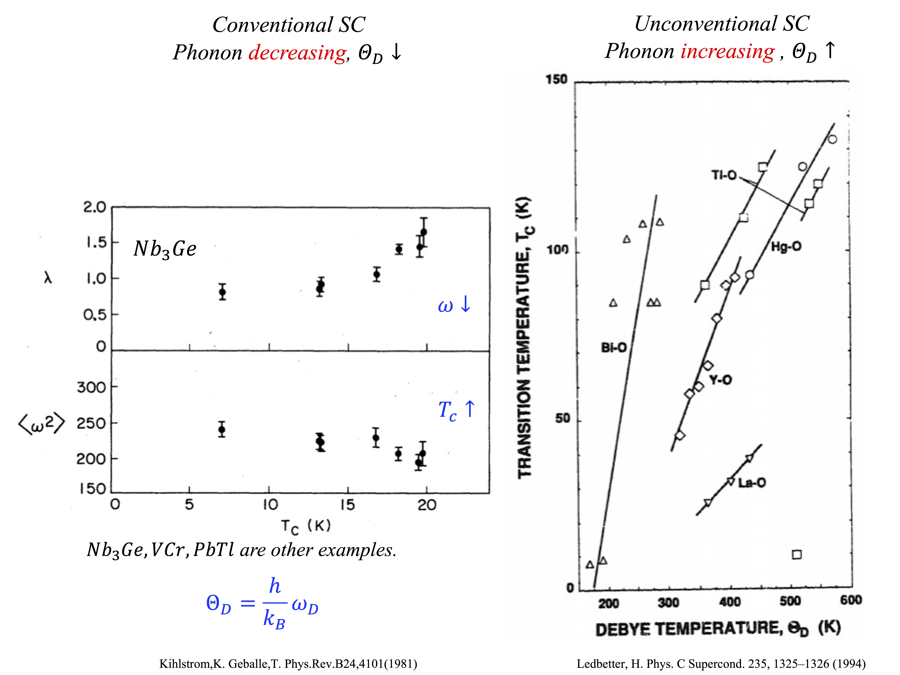
▲(左) \(Nb_3Ge\) 的負聲子效應；(右) 銅氧系超導體的正聲子效應。(點圖放大)
壓力效應 \( P \)
在多數金屬超導體中，壓力對 \(T_c\) 呈負效應。然而在銅氧系、鐵基、以及富氫超導體中，壓力則表現出正效應或拋物線形變化。 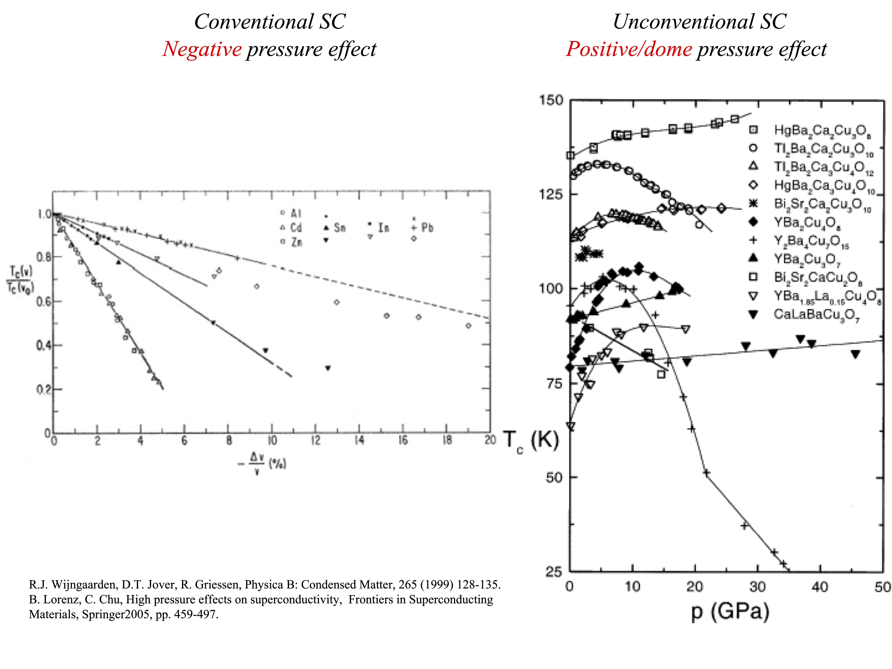
▲(左) 金屬超導的負壓力效應；(右) 銅氧系的正壓力或圓頂效應。(點圖放大)
載子數效應 \( Z \)
在金屬、銅氧、鐵基等超導體中，其相圖皆表現出拋物線形的 \(T_c\) 對載子數關係。在欠摻雜區，為強耦合，載子數的增加會提升 \(T_c\)；而在過摻雜區則為弱耦合，載子數增加會降低 \(T_c\)。此外，透過閘極調控薄膜材料載子數，也觀察到類似圓頂效應。 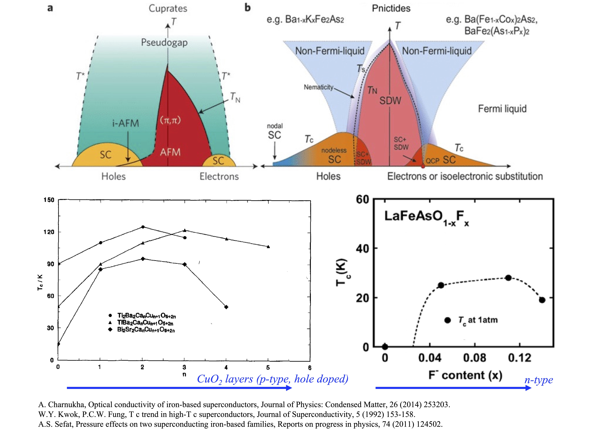
▲載子數的圓頂效應。(點圖放大)
\( \Omega \)、\( P \)、\( Z \) 的交叉效應
上述三個參數皆展現出共通的拋物線形趨勢 —— 在強耦合區為正效應，在弱耦合區則為負效應。這三個效應常常彼此耦合，形成交叉影響。以 \(YBa_2Cu_3O_{7-\delta}\) 為例，其 \(Z\) 可透過改變氧含量調控，進而改變聲子頻率 \(\Omega\) 與晶格體積（等效壓力 \(P\)）。因此，聲子頻率、壓力、與載子數三者應被同時考慮。 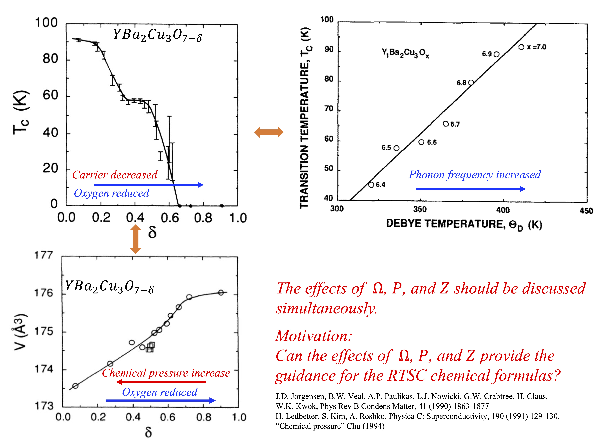
▲YBCO 系統的交叉效應。(點圖放大)
物理建模
電子–聲子耦合的角色
Cooper 不穩定性導出的 \(T_c\) 關係是超導性的一般特性，形式為：
$$T_c \sim W e^{- {1 \over \lambda}}$$
其中 \(W\) 是超導電子的帶寬，\(\lambda\) 是配對耦合常數。傳統超導體，包括金屬、\(MgB_2\) 及富氫化合物，皆可透過聲子中介配對被 BCS 理論充分解釋。 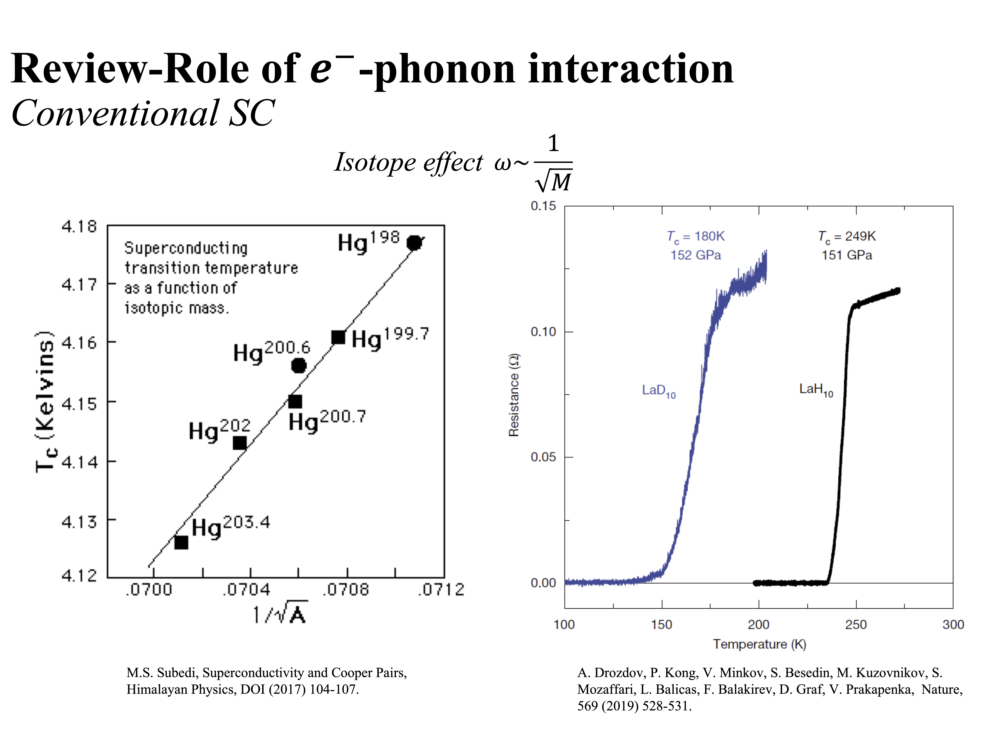 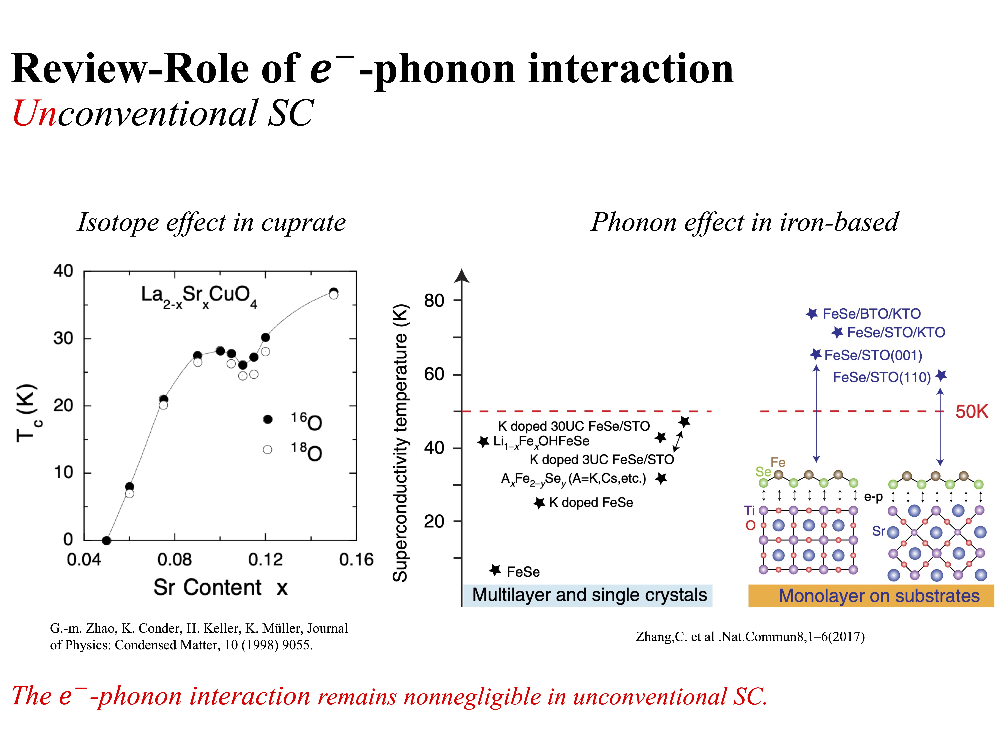
▲同位素效應是證明電子–聲子耦合在超導體中關鍵角色的重要實驗。(點圖放大)
與此同時，非典型超導體如銅氧與鐵基超導體，常以 Hubbard 型理論來描述。儘管 Hubbard 模型強調電子間的強排斥作用，但聲子–電子交互作用仍不可忽略，並可能促使非常規超導性。因此本文討論聲子頻率、載子數與壓力變化對聲子介導配對的影響。
▲即使在非常規超導體中，同位素效應與聲子效應仍不可忽略。(點圖放大)
材料設計與理論之間的連結
若想發現新的超導配方，有必要將超導理論與材料參數結合起來。在超導理論中，主流看法指出電子–聲子交互作用促使超導態產生，其臨界溫度 \(T_c\) 由 Debye 溫度 \(\Theta_D\) 與耦合常數 \(\lambda\) 決定。然而預測超導性通常需進行複雜的理論計算，例如第一性原理計算聲子譜與自旋佔據，再將參數代入超導理論來預測潛在 \(T_c\)。這樣的步驟對於大規模新配方篩選不夠實用。
另一種方法是使用可實驗測量的參數，如聲子頻率 \(\Omega\)、元素價電子 \(Z\)、晶格常數 \(a\)、或壓力 \(P\)——這些通常可從元素特性估算。若我們能將 \(T_c\) 和耦合常數 \(\lambda\) 表示為 \(\Omega, Z, P\) 的函數：
$$T_c = T_c(\Omega, Z, P)$$
$$\lambda = \lambda(\Omega, Z, P)$$
那麼透過：
$$dT_c = \frac{\partial T_c}{\partial \Omega} d\Omega + \frac{\partial T_c}{\partial Z} dZ + \frac{\partial T_c}{\partial P} dP$$
的符號分析，即可快速預測增減各參數對 \(T_c\) 的影響，有助於配方選擇。
量子哈密頓 – 聲子、載子、壓力统一理論
本文將 BCS–McMillan 理論拓展，以统一聲子頻率 \(\Omega\)、載子數 \(Z\)、與壓力 \(P\) 對超導性的影響。量子哈密頓表達式為： $$\hat{H} |\Psi\rangle = \left[ \sum_{k\sigma} \xi_k \hat{c}^\dagger_{k\sigma} \hat{c}_{k\sigma} + \frac{1}{N} \sum_{kk'} \frac{g_{\mathrm{eff}}}{M\Omega^2} \hat{c}^\dagger_{k\uparrow} \hat{c}^\dagger_{k\downarrow} \hat{c}_{-k'\downarrow} \hat{c}_{k'\uparrow} \right] |\Psi\rangle$$ 我推導出耦合常數 \(\lambda\) 及 \(T_c\) 的顯式形式： $$\lambda = \frac{C \sqrt[3]{Z n_{\mathrm{ion}}}}{M\Omega^2}$$ $$T_c \sim \Omega \exp\left(-\frac{1}{\lambda}\right) = \Omega \exp\left[-\frac{M\Omega^2}{C \sqrt[3]{Z n_{\mathrm{ion}}}}\right]$$ 其中 \(C\) 是常數，\(M\) 是離子質量，\(Z\) 是價電子數，\(n_{\mathrm{ion}}\) 是離子數密度。
\(T_c\) 對聲子頻率 \(\Omega\) 的依賴
\(T_c\) 對 \(\Omega\) 的導數為： $$ \frac{dT_c}{d\Omega} \sim \frac{T_c}{\Omega} \left(1 - \frac{2}{\lambda}\right) $$ 該導數在 \(\lambda = 2\) 時為零，定義此臨界耦合常數為 \(\lambda_c^\Omega = 2\)。
\(T_c\) 對載子數 \(Z\) 的依賴
將公式重寫為 \(Z\) 的函數後（假設 \(\Omega = \sqrt{Z^2 e^2 n_{\mathrm{ion}}/(\varepsilon_0 M)}\)），耦合常數與 \(T_c\) 表達式為： $$\lambda(Z) = \frac{C \varepsilon_0}{e^2 n_{\mathrm{ion}}^{2/3}} Z^{-5/3}$$ $$T_c(Z) \sim \left(\frac{Z^2 e^2 n_{\mathrm{ion}}}{\varepsilon_0 M}\right)^{1/2} \exp\left(-\frac{C \varepsilon_0}{e^2 n_{\mathrm{ion}}^{2/3}} Z^{-5/3}\right)$$ 此時導數： $$\frac{d\lambda}{dZ} = -\frac{5}{3}\frac{\lambda}{Z},$$ $$\frac{dT_c}{dZ} = \frac{T_c}{Z}\left(1 - \frac{5/3}{\lambda}\right)$$ 當 \(\lambda = 5/3\) 時 \(dT_c/dZ = 0\)，故定義 \(\lambda_c^Z = 5/3\)。
\(T_c\) 對壓力 \(P\) 的依賴
定義壓縮率 \(\beta = -\frac{1}{V}\frac{dV}{dP}\)，利用 \(n_{\mathrm{ion}} = N_{\mathrm{ion}}/V\)，將公式重寫為 \(V\) 的函數： $$\lambda(V) = \frac{C \varepsilon_0}{e^2 Z^{5/3} N_{\mathrm{ion}}^{2/3}} V^{2/3}$$ $$T_c(V) \sim \left(\frac{Z^2 e^2 n_{\mathrm{ion}}}{\varepsilon_0 M V}\right)^{1/2} \exp\left(-\frac{e^2Z^{5/3} N_{\mathrm{ion}}^{2/3}}{C \varepsilon_0} V^{-2/3}\right)$$ 對應導數為： $$\frac{d\lambda}{dP} = -\beta V \cdot \frac{2}{3}\frac{\lambda}{V},$$ $$\frac{dT_c}{dP} = \beta V \cdot \frac{1}{2}\frac{T_c}{V}\left(1 - \frac{4/3}{\lambda}\right)$$ 當 \(\lambda = 4/3\) 時，\(dT_c/dP = 0\)，因此定義 \(\lambda_c^P = 4/3\)。

Zigzag 增強策略
這些臨界耦合常數與實驗結果一致，將超導分為三類：弱耦合（\(\lambda < \lambda_c^P\)）、中耦合（\(\lambda_c^P < \lambda < \lambda_c^\Omega\)）、以及強耦合（\(\lambda > \lambda_c^\Omega\)）。不同區段採用不同提升策略，最終皆可引導至中耦合區，而在中耦合區透過折線式交替調控 \(P\) 與 \(Z\)，即可進一步提升 \(T_c\)。
具體方法為：假設 \(\lambda_c^P < \lambda < \lambda_c^Z\)。第一步：降低 \(Z\) 使 \(\lambda\) 達到 \(\lambda_c^Z\)（記為 \(\lambda_1\)）；第二步：提高 \(P\)，使 \(\lambda\) 降至 \(\lambda_c^P\)（記為 \(\lambda_2\)），此時 \(T_c\) 最大；第三步：再次降低 \(Z\)，將 \(\lambda\) 提升至 \(\lambda_c^Z\)（記為 \(\lambda_3\)），使 \(T_c\) 再次提升。如此交替操作，\(T_c\) 如同 zigzag 山形逐步上升。
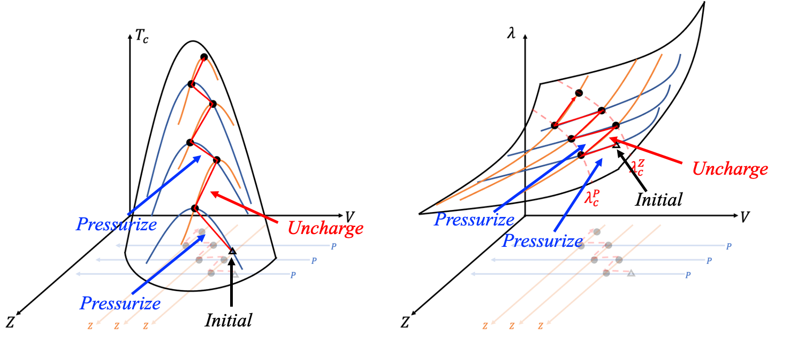
氧化物合成、SEM 與 XRD 表徵
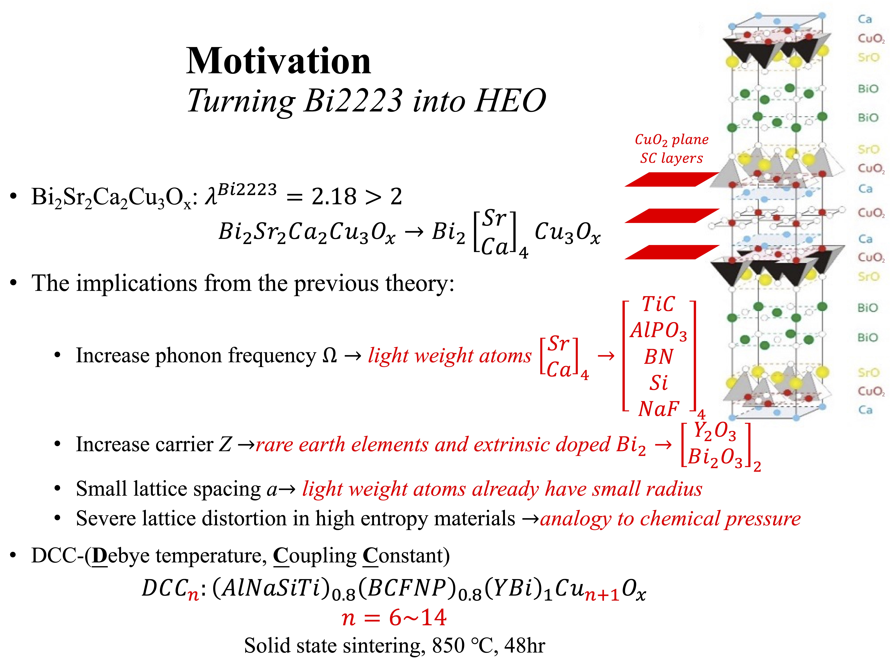
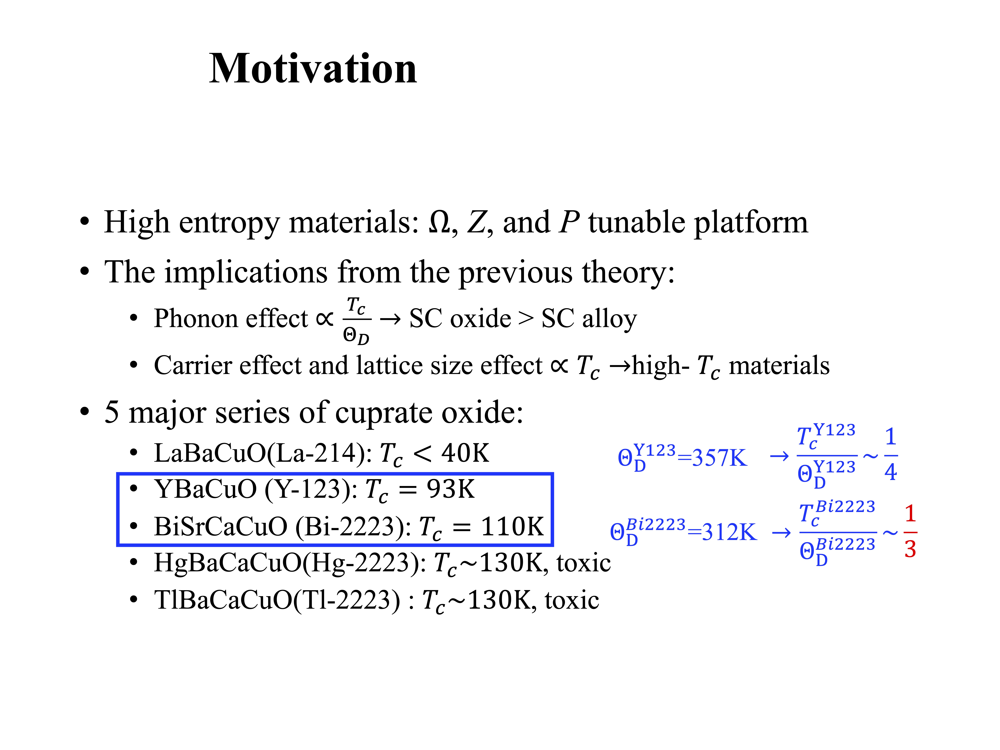
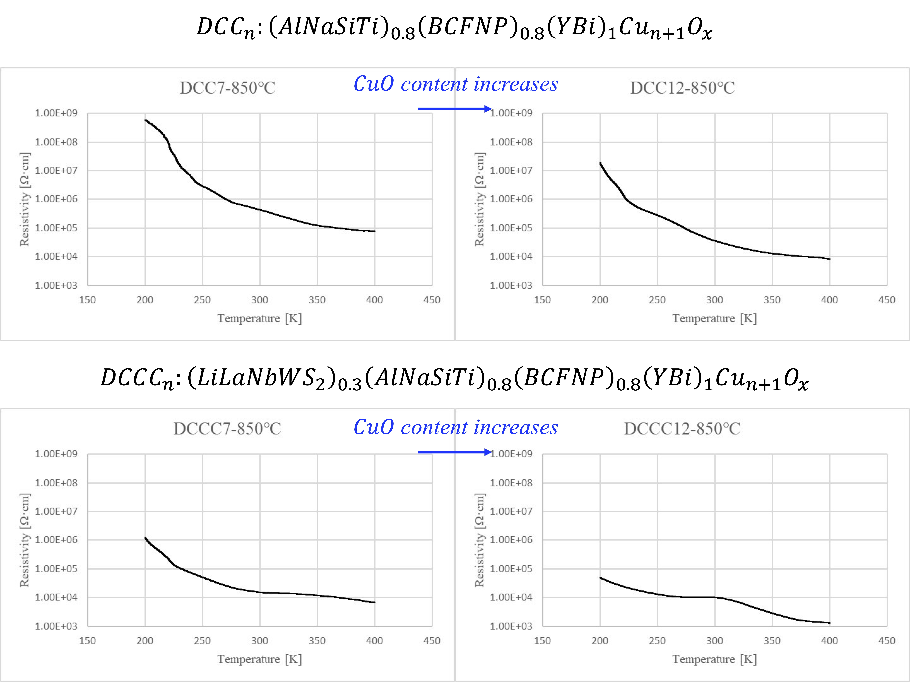
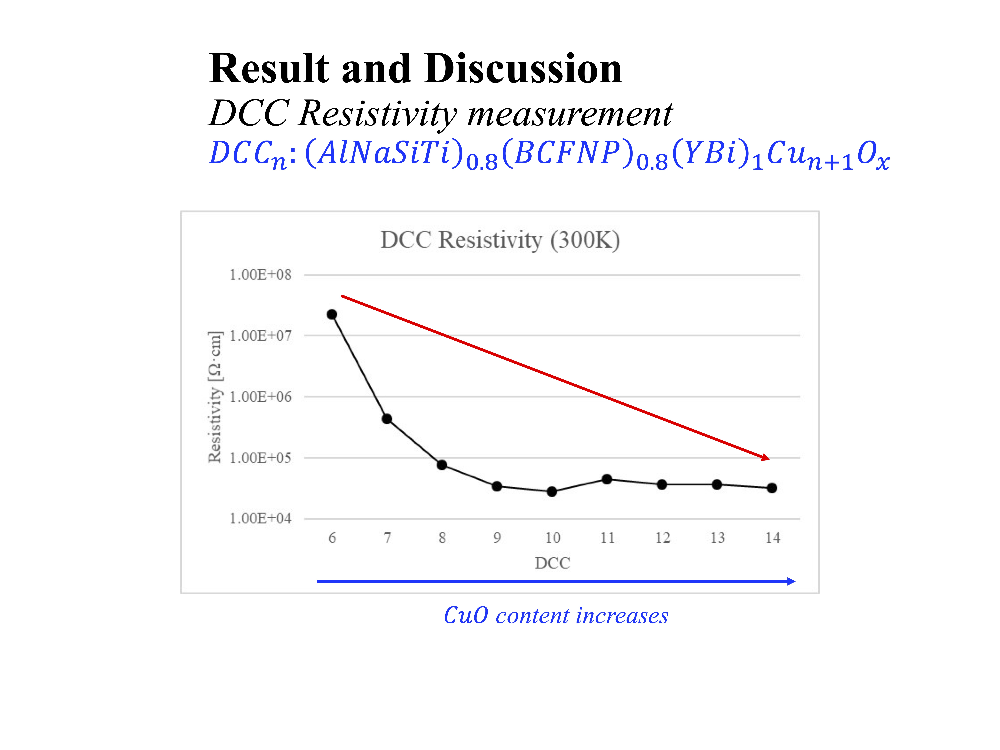
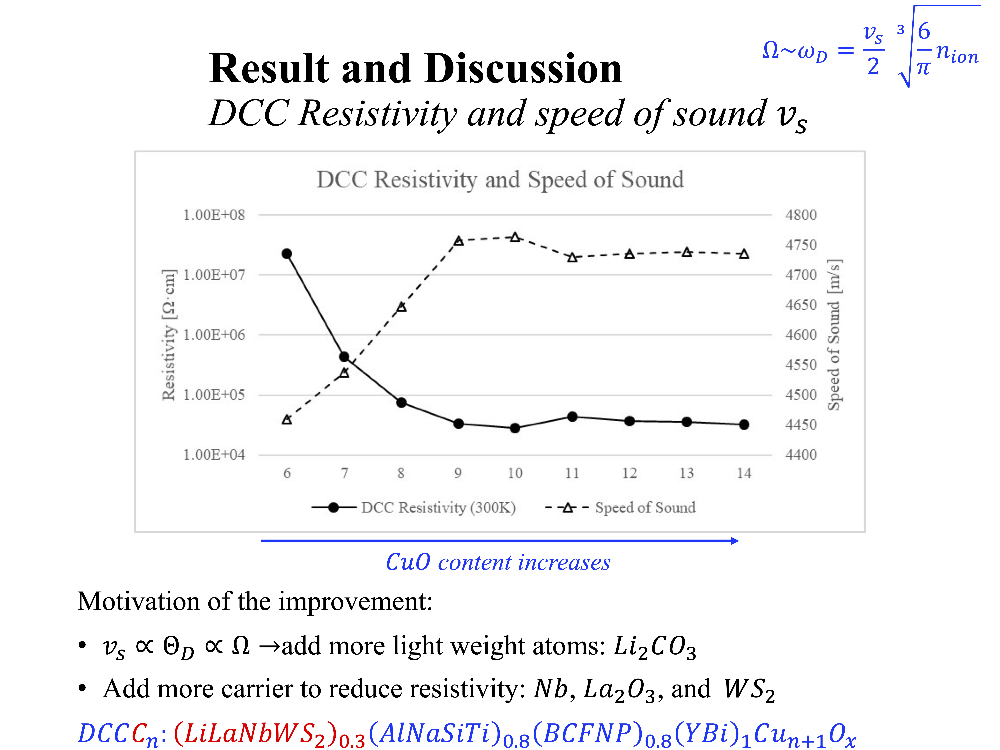
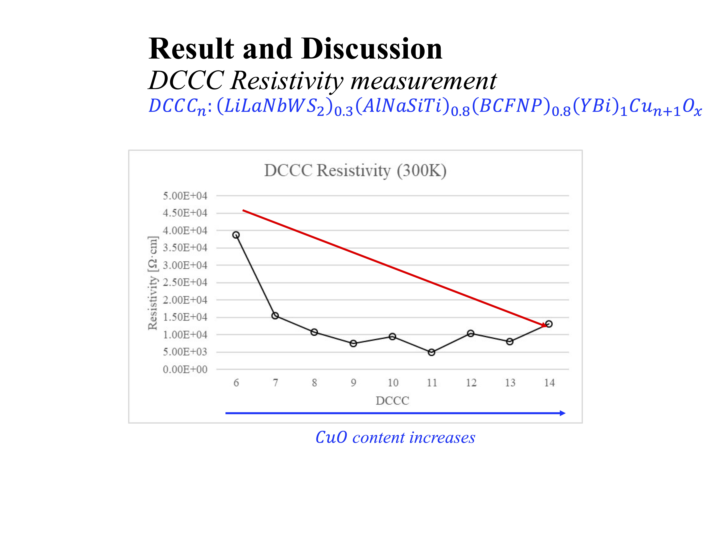
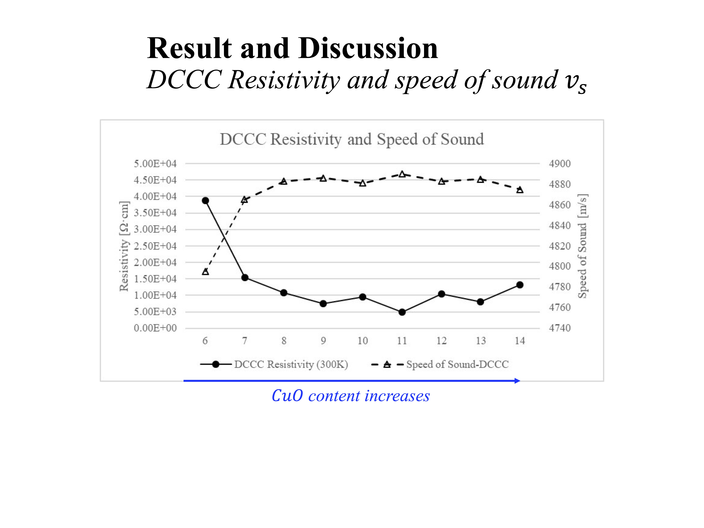
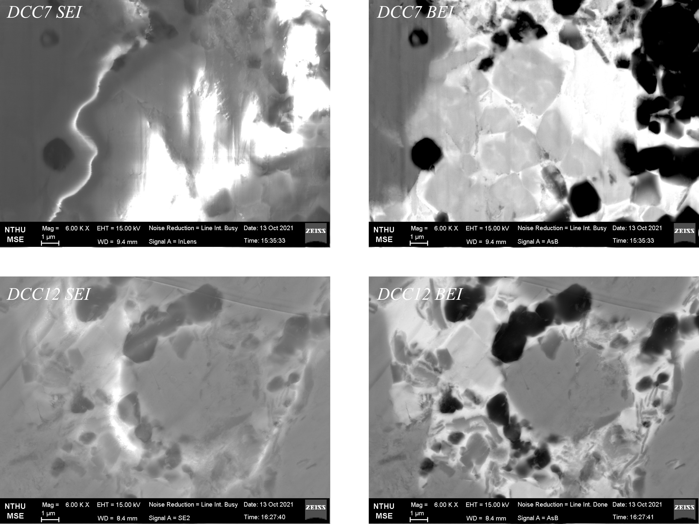
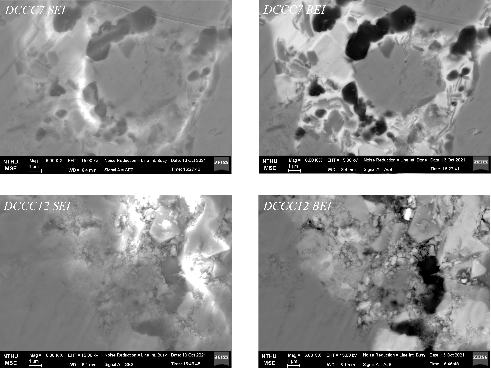
▲ZEISS Gemini SEM 高熵氧化物樣品的光學顯微照。可見樣品表面形貌與相組織。 (點圖放大)
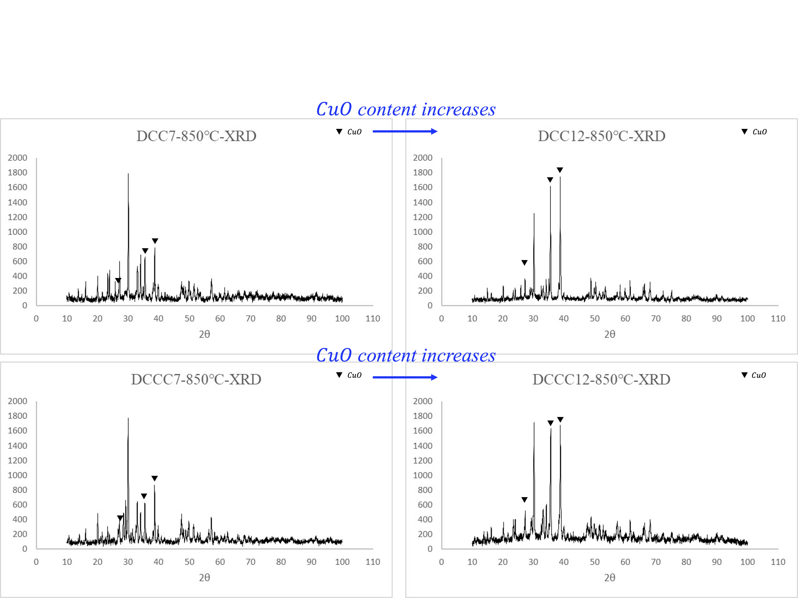
▲使用 Bruker D2 PHASER 進行 X 光繞射 (XRD) 測量，分析樣品晶體結構與相組成。這對確認樣品中是否形成預期的高熵結構至關重要。(點圖放大)
總結與展望
本文從實驗與理論兩個層面，探討了提升超導臨界溫度 \(T_c\) 的各種路徑與對應的臨界耦合常數。透過聲子頻率 \(\Omega\)、載子數 \(Z\)、與壓力 \(P\) 的交互作用與數學建模，我們定義出三個臨界耦合常數：\(\lambda_c^\Omega = 2\)、\(\lambda_c^Z = 5/3\)、與 \(\lambda_c^P = 4/3\)，進一步建立 Zigzag 式的提升策略框架。 在實作上，我合成了一系列高熵超導氧化物，透過 SEM 與 XRD 對其進行結構與組成分析，驗證理論模型的實際可行性。這一研究不僅提出了一套全新的提升路徑框架，也為未來室溫超導材料的尋找提供了可行策略。 未來工作將著重於：
進一步擴展高熵材料組合空間，探索更多具潛力的配方
精細調控 \(\lambda\) 的變化與材料微結構之關聯
引入機器學習與演算法優化篩選策略，加速超導材料的設計流程
 王培儒
王培儒{kind=link}
{kind=link}
{kind=link}
{kind=link}
{kind=link}
{kind=link}
{kind=link}
{kind=link}
{kind=link}
{kind=link}
{kind=link}
{kind=link}
{kind=link}
{kind=link}
{kind=link}
{kind=link}
{kind=link}
{kind=link}
{kind=link}